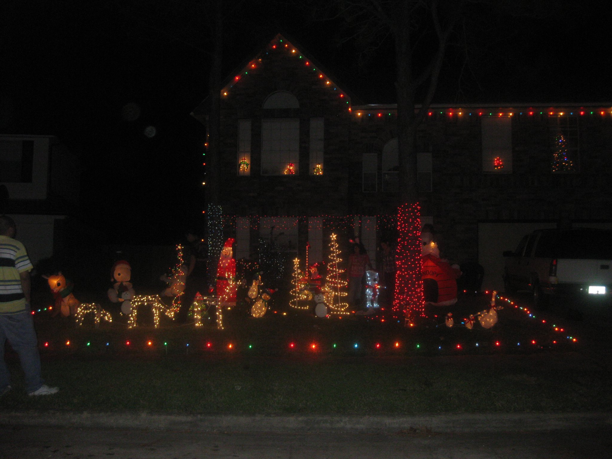

We will mow your grass to your preferred height and expertly trimming edges for a neat, uniform, and squared finish.
The most common and efficient way to mow your lawn. You can mow in horizontal rows for wide yards, vertical rows for longer lawns, or in either direction for square yards. Another design is checkered. You can create this pattern by mowing a straight line, then mowing back in the reverse direction, slightly overlapping the first line.Cutting your grass too short can damage it and make it harder for it to absorb nutrients, water, and sunlight. It can also impair root growth and slow down growth. When mowing, you should avoid removing more than one-third of the grass's height.
Yard Clean
Basic yard care services, like raking leaves, picking up trash, and tidying up the space.
Remove leaves, sticks, and other debris that may have accumulated over the winter. This will help your lawn get the nutrients it needs to grow. Remove debris from your gutters to prevent damage from leaking and flooding. Remove dead leaves, weeds, and other debris from around your plants to help them grow. Mulch helps your soil retain moisture, suppresses weeds, and keeps the soil cool.We pick up or sweep away leaves, twigs, and petals as soon as you notice them to prevent matting. Mulching can feed your lawn andhelp your soil retain moisture.
Outdoor Decoration
We provide professional outdoor decoration installation for any occasion, including general setups and holiday displays.

The holiday season is a time for celebration, but safety should remain a priority to prevent hazards like fires caused by decorations or cooking. Choose flame-resistant decorations, use properly tested lights, and avoid overloading circuits. Keep live trees well-watered, away from heat sources, and dispose of them when dry. Use ladders carefully and position extension cords to avoid trip hazards. During gatherings, stay attentive while cooking, keep flammable items away from heat, and ensure children and pets stay clear of hot surfaces and lit candles. Simple precautions can help ensure a safe and joyful holiday season.YSL Lawn Care’s holiday decorating services take the stress out of the season by professionally installing and arranging your decorations to suit your style, space, and budget. Whether it’s LED lighting, festive planters, garlands, wreaths, or fully decorated trees, YSL ensures your outdoor spaces are beautifully adorned. They handle both fresh-cut and artificial decorations, along with take-down and storage, to keep your property looking festive and hassle-free throughout the holidays.